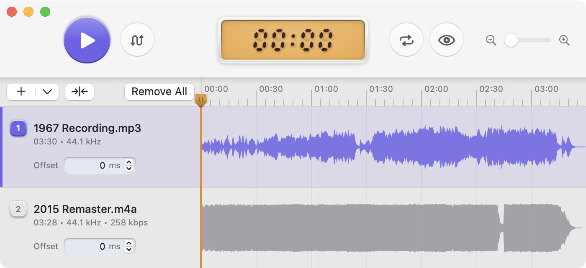

1
Instant take switching
Stay in sync as you toggle between takes, without restarting playback or losing your place.
Compare multiple versions of the same track, pick your favorite take.

Built for listening decisions
Stay in sync as you toggle between takes, without restarting playback or losing your place.
Line up different recordings, masters, bounces, and exports so the comparison starts from a fair place.
Hide details, shuffle the order, and reveal the identities after the decision is made.
Designed for macOS with a polished native interface and full light and dark mode support.
Load a full set of mixes, masters, revisions, or references and move through them from one shared timeline.
Loop the exact section you care about so small arrangement, mix, or mastering differences are easier to hear.
Quick open from Finder and Apple Music, drag and drop support, and full keyboard shortcuts keep the workflow moving.